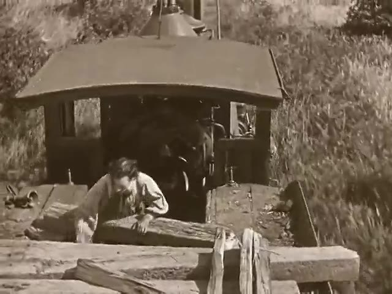

The General, frame at 31:19
Buster Keaton and Clyde Bruckman · 1926 · Silent film, tinted in this copy (frame)
Free to use
Keaton did this stunt himself. He pulled a railroad tie out of the track with the train approaching, sat on the cowcatcher of the slow-moving engine holding it, and threw it at another tie to knock it off the rails. He had tried to lease the real General, then on display at Chattanooga, but the railway refused once it learned the film was a comedy. By the end of shooting he had exposed 200,000 feet of film.
Open in The ArtchiveFull-size file ↗